class: center, middle <img src="https://apriko.com/en/wp-content/uploads/sites/3/2024/12/devops.png" width=50%/> # DevOps, Software Evolution and Software Maintenance Helge Pfeiffer, Associate Professor,<br> [Research Center for Government IT](https://www.itu.dk/forskning/institutter/institut-for-datalogi/forskningscenter-for-offentlig-it),<br> [IT University of Copenhagen, Denmark](https://www.itu.dk)<br> `ropf@itu.dk` --- class: center, middle # Feedback: The state of your projects? --- ## Monitoring? Only **3/13** groups sent a pull-request to https://github.com/itu-devops/MSc_lecture_notes/blob/master/misc_urls.py with a monitoring URL? <img src="https://media1.tenor.com/m/ACBGhLB0v0gAAAAC/looney-tunes-telescope.gif" width="40%"> -- Remember from last session: > Without monitoring you are not doing your job. > > James Turnbull _"The Art of Monitoring"_ So everybody, please add monitoring to your applications and share the link to the dashboard with us. --- ### Group A <table> <tr> <td width="40%"> <p>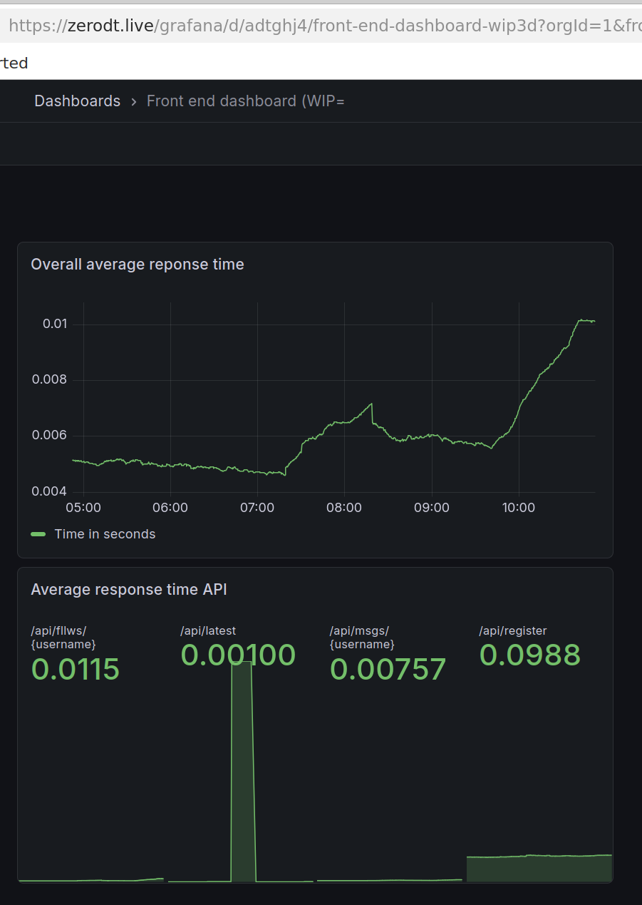</p> </td> <td width="60%"> <p>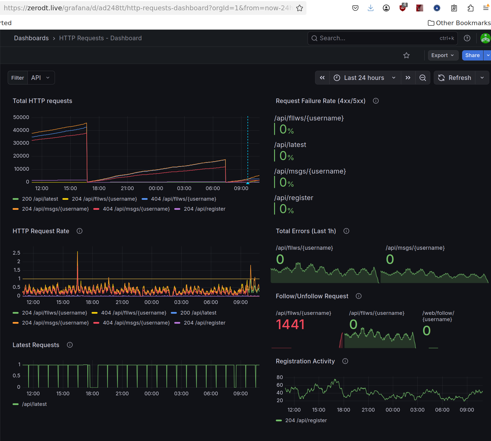</p> </td> </tr> </table> --- ### Group A <table> <tr> <td width="70%"> <p>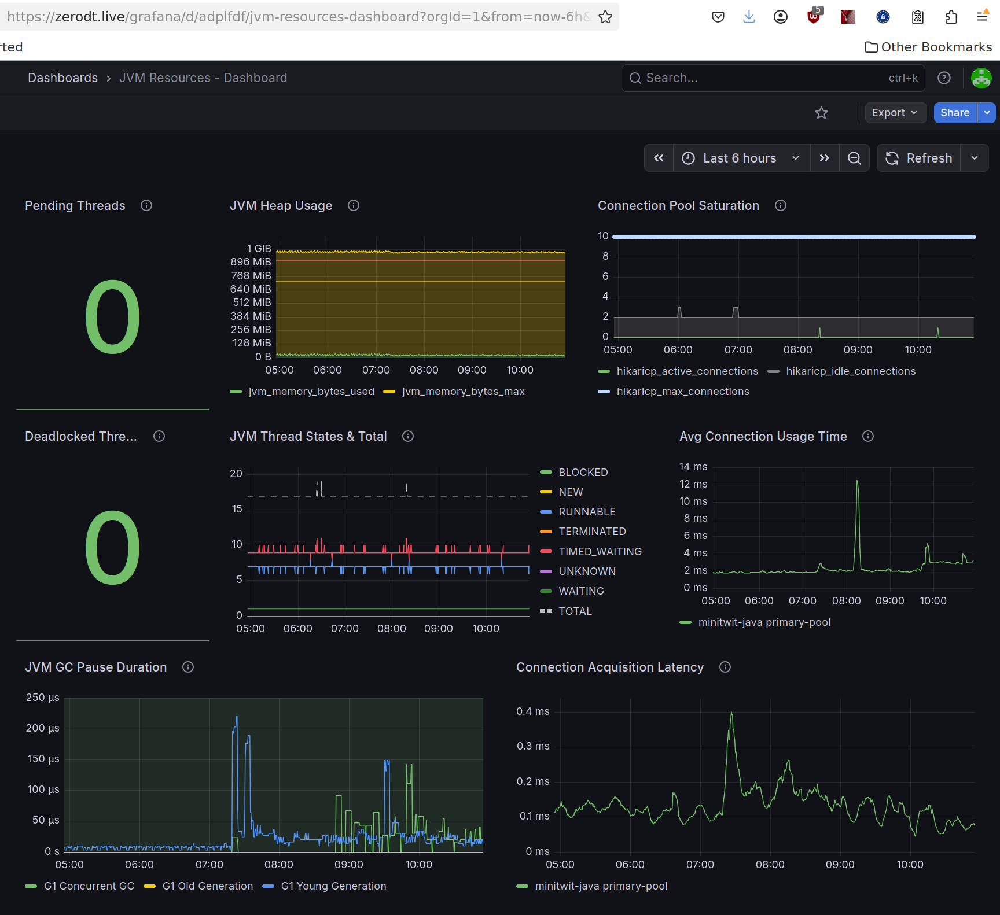</p> </td> <td width="30%"> <p>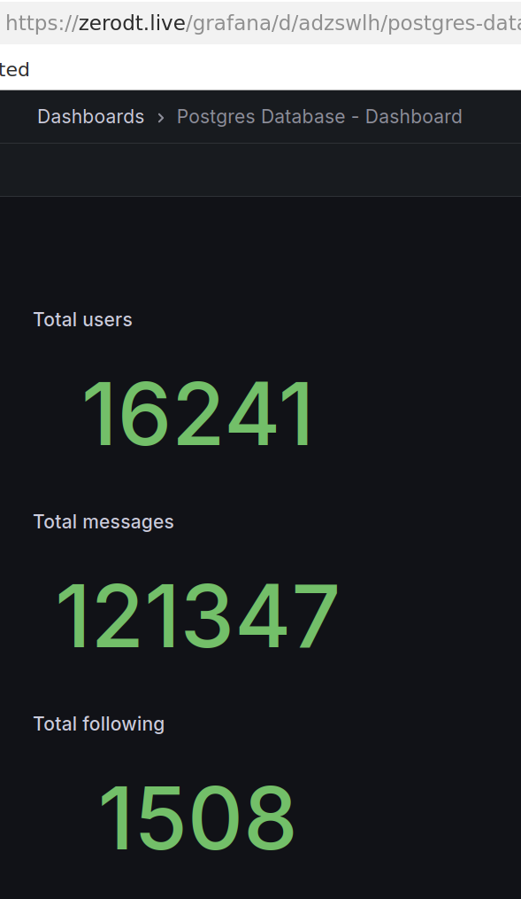</p> </td> </tr> </table> --- ### Groups E and I <p>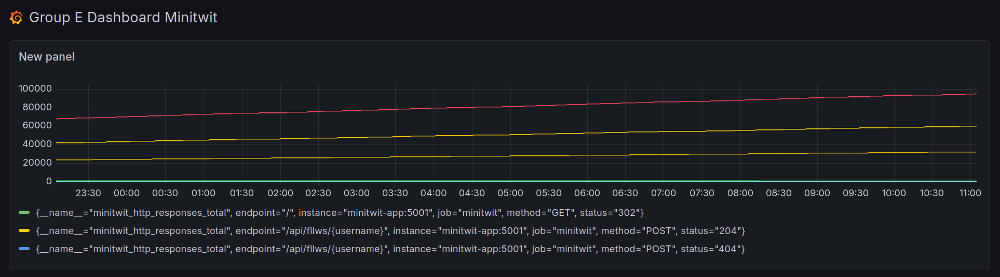</p> <p>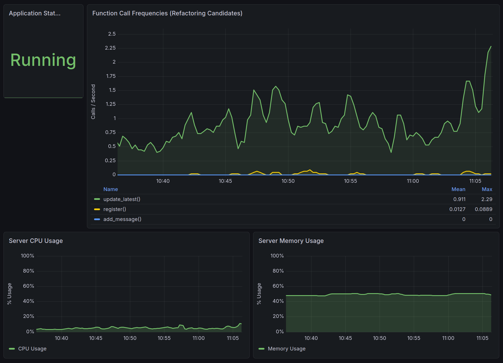</p> --- ### Please remember that the monitoring dashboard has to be accessible for us... Either it is public or you have to use the [credentials were distributed via Teams](https://teams.cloud.microsoft/l/channel/19%3ANtbHJgbpONeG3FiF2DS0jX2R_qNAcnzAJr8bZ0qtAVA1%40thread.tacv2/General?groupId=dccde382-03f7-4b4f-bbe1-252d63a8b953&tenantId=bea229b6-7a08-4086-b44c-71f57f716bdb). --- ### Release Activity <object width="100%" data="http://134.209.249.148/release_activity_weekly.svg"></object> --- ### Weekly Commit Activity <object width="100%" data="http://134.209.249.148/commit_activity_weekly.svg"></object> --- ### Latest processed events? <object width="100%" data="http://138.68.85.121/chart.svg"></object> --- ### Error plot <object width="100%" data="http://138.68.85.121/error_chart.svg"></object> --- ## How do you feel it is going with your projects? --- #### What I can see? <img src="https://c.tenor.com/y9hlWXLxx44AAAAC/tenor.gif" width="40%"> For [Group a](https://zerodt.live/), [Group b](http://164.92.186.201:5001), [Group c](http://161.35.68.148:80), [Group d](http://164.92.201.201:8080), [Group e](http://209.38.209.29:5001), [Group f](http://157.230.30.175:8080), [Group g](https://minitwitter.com), [Group i](http://164.92.231.30:8080), [Group k](http://209.38.114.224:5035), [Group n](http://168.119.126.80), [Group o](http://ec2-13-51-198-31.eu-north-1.compute.amazonaws.com:3000), and [Group p](http://164.90.229.101), [Group q](http://46.224.144.214:8080), everything seems to work as expected. That happened never before at this point of the course! Are the LLMs helpful? -- Your systems seem to _"to satisfy stated and implied needs when used under specified conditions"_, i.e., a sign of good software quality. --- class: center, middle # Software Quality? --- Now, that we are in the second half of the course and that you spent a lot of time evolving and maintaining your *ITU-MiniTwit* systems, some questions might arise: * Are your *ITU-MiniTwit* systems any good? * How good/bad are your *ITU-MiniTwit* systems? * Is there anything one can do to improve quality of your *ITU-MiniTwit* systems? --- ## What is Software Quality? Generally, _quality_ is defined as: > "[...] the totality of characteristics of an entity that bear on its ability to satisfy stated and implied needs." > > [ISO 8402:1994, Quality management and quality assurance – Vocabulary](https://www.iso.org/standard/20115.html) -- For the term _software quality_ industrial standards are quite consistent. > **(1)** capability of a software product to satisfy stated and implied needs when used under specified conditions > > [_Systems and software engineering — Systems and software Quality Requirements and Evaluation (SQuaRE) — Guide to SQuaRE_, International Organization for Standardization, Geneva, CH, Standard, May 2015](https://www.iso.org/obp/ui/#iso:std:64764:en) > > **(2)** degree to which a software product satisfies stated and implied needs when used under specified conditions > > [_Systems and software engineering — Systems and software Quality Requirements and Evaluation (SQuaRE) — System and software quality models_, International Organization for Standardization, Geneva, CH, Standard, May 2015](https://www.iso.org/obp/ui/#iso:std:iso-iec:25010:ed-1:v1:en) > > **(3)** degree to which a software product meets established requirements > > [_IEEE 730-2014 IEEE Standard for Software Quality Assurance Processes_](https://standards.ieee.org/standard/730-2014.html) --- ## What is Software Quality? Various stakeholders have particular and varying quality requirements: > Good software should deliver the required functionality and performance to the user and should be maintainable, dependable, and usable. > > [I. Sommerville, _Software Engineering_, 9th ed. USA: Addison-Wesley Publishing Company, 2010.](https://www.pearson.com/us/higher-education/product/Sommerville-Software-Engineering-9th-Edition/9780137035151.html) --- ## What is Software Quality? Various stakeholders have particular and varying quality requirements: > ... David Gamin studied how quality is perceived in various domains, including philosophy, economics, marketing, and operations management. He concluded that "quality is a complex and multifaceted concept" that can be described from five different perspectives. > > * The **transcendental view** sees quality as something that can be recognized but not defined. > > * The **user view** sees quality as fitness for purpose. > > * The **manufacturing view** sees quality as conformance to specification. > > * The **product view** sees quality as tied to inherent characteristics of the product. > > * The **value-based view** sees quality as dependent on the amount a customer is willing to pay for it. > > [Kitchenham et al. 1996 _Software Quality: The Elusive Target_](https://ieeexplore.ieee.org/iel1/52/10198/00476281.pdf) One perspective that is missing in the above but that Sommerville describes in chapter 24.4 is the perspective of *software process quality*, which assumes that the better the process leading to a software product the better the product itself. --- ## Software Quality Models Since there are many software quality models. Let's have a look at the earliest Boehm's model from 1976 and more recent ones from the ISO 250x0 series of standards. --- ### Boehm 1976 - Quality Model <p>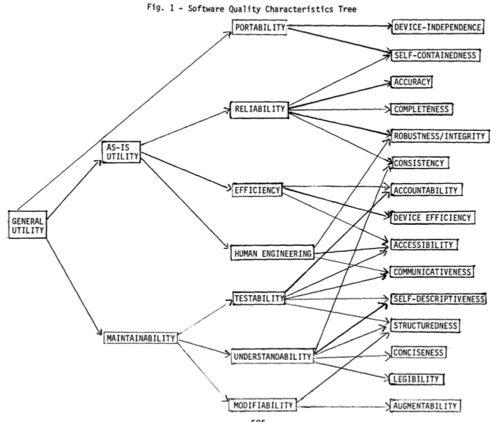</p> [Boehm et al. _"Quantitative evaluation of software quality"_](https://dl.acm.org/ft_gateway.cfm?id=807736&type=pdf) --- ### Boehm 1976 - Quality Model <p>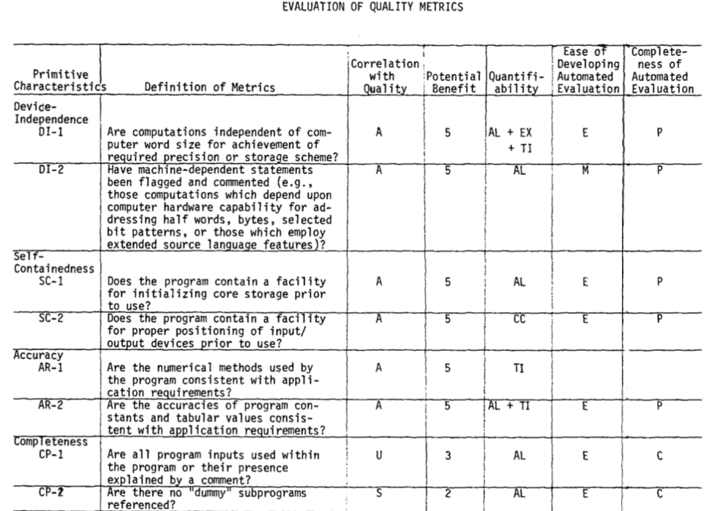</p> [Boehm et al. _"Quantitative evaluation of software quality"_](https://dl.acm.org/ft_gateway.cfm?id=807736&type=pdf) --- ### ISO 250x0 - Quality Models <p>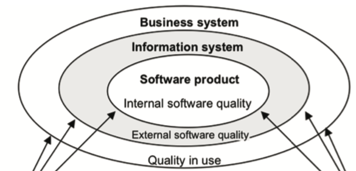</p> --- ### ISO 25010 - Quality in Use Model <p>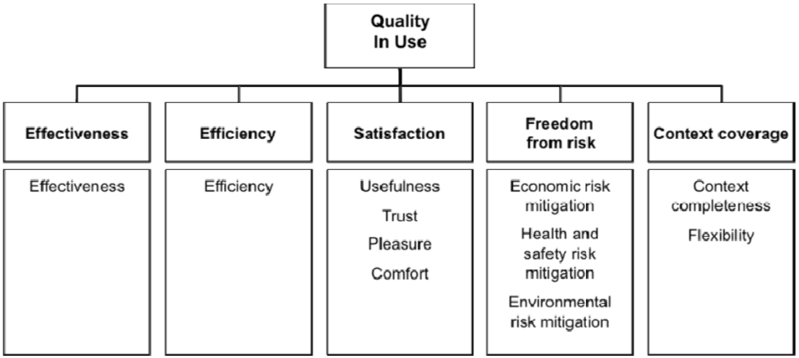</p> --- ### ISO 25010 - Product Model <p>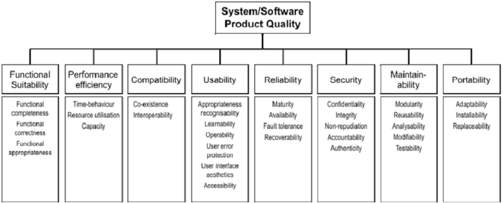</p> --- ### ISO 25023 - Metrics (QMEs) <p>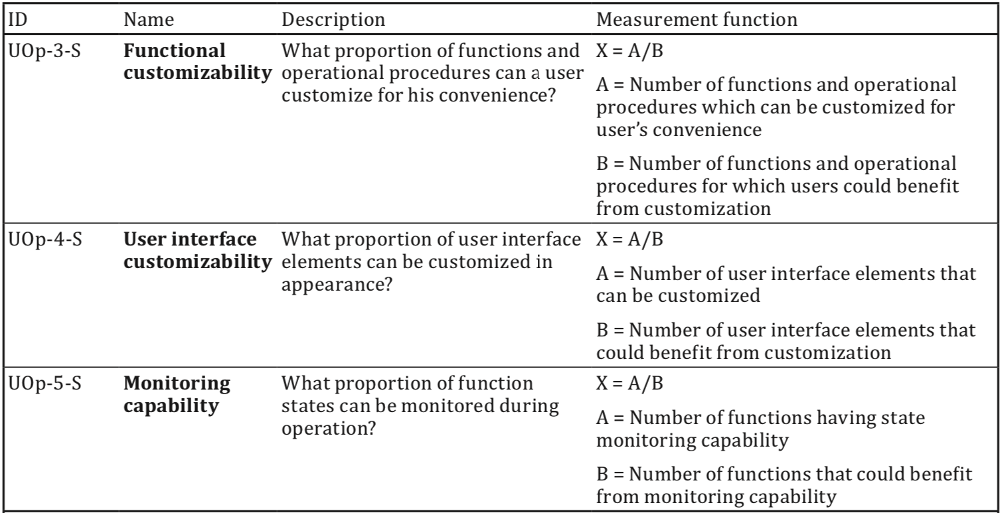</p> --- ### How to measure software quality and quality attributes? As Sommerville states, it is neither easy nor straight forward: > Unfortunately, it is difficult to make direct measurements of many of the software quality attributes [...]. Quality attributes such as maintainability, understandability, and usability are external attributes that relate to how developers and users experience the software. They are affected by subjective factors, such as user experience and education, and they cannot therefore be measured objectively. To make a judgment about these attributes, you have to measure some internal attributes of the software (such as its size, complexity, etc.) and assume that these are related to the quality characteristics that you are concerned with. ---------------------------- -- Usually: > The project or organization must start by making a list of nonfunctional requirements that define the "right code." We call this the quality model. > > Letouzey et al. 2012 _"Managing Technical Debt with the SQALE Method"_ Then one has to define and specify metrics, associate them to the quality attributes of interest, translate these metrics into precise programs/measures on given artifacts, and define how measured values are aggregated in the end for assessment. --- ### Problematic about Software Quality: "What is Software?" Remember that _software_ is way more than code! > [...] software is not just the programs themselves but also all associated documentation and configuration data that is required to make these programs operate correctly. > > Sommerville _"Software Engineering"_ (9th Ed.) -- Interestingly, it is not properly defined what software actually is. > "Software is the collection of all artifacts, which allow (a) suitably educated person(s) with access to specified and suitable hardware to instantiate a running system. > > Additionally, the collection of such artifacts allow such (a) person(s) to understand and reason about a systems' working and properties and let them understand why the system is as it is and why it behaves the way it does." > > _Helge's definition of software_ That is, when you want to measure software quality, you have to necessarily look at more than just source code. --- ## Maintainability As you could already see in the first quality model [Boehm et al. _"Quantitative evaluation of software quality"_](https://dl.acm.org/ft_gateway.cfm?id=807736&type=pdf) _maintainability_ seems to be an important software quality. --- This is likely due to: > M2. Maintenance typically consumes about 40 to 80 percent (60 percent average) of software costs. Therefore, it is probably the most important life cycle phase. > > ... > > M3. Enhancement is responsible for roughly 60 percent of software maintenance costs. Error correction is roughly 17 percent. So, software maintenance is largely about adding new capability to old software, not about fixing it. > > ... > > M5. Most software development tasks and software maintenance tasks are the same—except for the additional maintenance task of "understanding the existing product." This task is the dominant maintenance activity, consuming roughly 30 percent of maintenance time. So, you could claim that maintenance is more difficult than development. > > [Glass _"Frequently Forgotten Fundamental Facts about Software Engineering"_](http://www.eng.auburn.edu/~kchang/comp6710/readings/Forgotten_Fundamentals_IEEE_Software_May_2001.pdf) --- ### What comprises Maintenance? * fixing bugs * keeping its systems operational * investigating failures * adapting it to new platforms * modifying it for new use cases * repaying technical debt * adding new features * etc. From: Kleppmann _"Designing Data-Intensive Applications"_ --- ### Design for Maintainability according to the ISO 25010 Product Model * Modularity * Reusability * Analysability * Modifyability * Testability --- ### Design for Maintainability (Kleppmann "Designing Data-Intensive Applications") ... minimize pain during maintenance, and thus avoid creating legacy software ourselves. * a) **Operability** Make it easy for operations teams to keep the system running smoothly. * b) **Simplicity** Make it easy for new engineers to understand the system, by removing as much complexity as possible from the system. (Note this is not the same as simplicity of the user interface.) * c) **Evolvability** Make it easy for engineers to make changes to the system in the future, adapting it for unanticipated use cases as requirements change. Also known as extensibility, modifiability, or plasticity. --- class: center, middle # Technical Debt --- ## Technical Debt? > "Shipping first time code is like going into debt. A little debt speeds development so long as it is paid back promptly with a rewrite. ... The danger occurs when the debt is not repaid. Every minute spent on not-quite-right code counts as interest on that debt." > > Cunningham 1992 _"The WyCash Portfolio Management System"_ -- - As in the saying *one man's meat is another man's poison*, we do not have generally true measures for software quality, i.e., *quite-right*, see e.g., Kitchenham 1996, Boehm 1976. - Often quality is domain specific as for example stated in the ISO 25000 standard: > "for interactive consumer software, such as word processor, usability and co-existence with other software, such as mailing software, is considered important. For Internet and open systems, security and interoperability are most important." > > ISO 25000 Technical Debt (TD) is used as metaphor to describe > “technical compromises that are expedient in the short term, but that create a technical context that increases complexity and cost in the long term” > > Avgeriou et al. [_“Managing technical debt in software engineering (dagstuhl seminar 16162)”_](https://drops.dagstuhl.de/opus/volltexte/2016/6693/pdf/dagrep_v006_i004_p110_s16162.pdf) <!-- - TD is: > "the cost of the effort required to fix problems that remain in the code when an application is released to operation." > > [Sappidi et al. 2010 _"CAST Worldwide 1141 Application Software Quality Study"_](https://www.agilealliance.org/wp-content/uploads/2016/01/CAST_2010AnnualReport_KeyFindings_WebFinal.pdf) - TD is: > "a metaphor for the accumulation of unresolved issues in a software project'" > > Birchall _"Re-Engineering Legacy Software"_ > "the difference between what was promised and what was actually delivered." > > [Radigan](https://www.atlassian.com/agile/software-development/technical-debt) --> <!-- --- ### How is technical debt introduced?  Source: https://martinfowler.com/bliki/TechnicalDebtQuadrant.html --> --- ## What can we do about SW Quality, Maintainability, and TD? In essence we can do two things: * introduce certain practices in our development process * introduce _quality gates_ via tests and tools into our build processes --- class: center, middle # Practices for Software Quality --- ## Practices for Software Quality: Testing ### Why shall we test at all? > Testing is intended to show that a program does what it is intended to do and to discover program defects before it is put into use. > > Sommerville _Software Engineering_ -- Software Quality: > degree to which a software product satisfies stated and implied needs when used under specified conditions > > [_Systems and software engineering — Systems and software Quality Requirements and Evaluation (SQuaRE) — System and software quality models_, International Organization for Standardization, Geneva, CH, Standard, May 2015](https://www.iso.org/obp/ui/#iso:std:iso-iec:25010:ed-1:v1:en) > > > degree to which a software product meets established requirements > > [_IEEE 730-2014 IEEE Standard for Software Quality Assurance Processes_](https://standards.ieee.org/standard/730-2014.html) --- ### Why shall we test at all? > GWS is the web server responsible for serving Google Search queries and is as important to Google Search as air traffic control is to an airport. **Back in 2005, as the project swelled in size and complexity, productivity had slowed dramatically**. **Releases** were becoming **buggier**, and it was taking **longer and longer** to push them out. Team members had **little confidence** when making changes to the service, and often found out something was wrong only when features **stopped working in production**. (At one point, **more than 80% of production pushes contained user-affecting bugs that had to be rolled back.**) -- > To address these problems, the tech lead (TL) of GWS decided to institute a policy of engineer-driven, automated testing. As part of this policy, **all new code changes were required to include tests**, and those **tests would be run continuously**. Within a year of instituting this policy, the **number of emergency pushes dropped by half**. This drop occurred despite the fact that the project was seeing a record number of new changes every quarter. > > T. Winters et al. _Software Engineering at Google_ --- ### What are tests? > The simplest test is defined by: > * A single behavior you are testing, usually a method or API that you are calling > * A specific input, some value that you pass to the API > * An observable output or behavior > * A controlled environment such as a single isolated process > > T. Winters et al. _Software Engineering at Google_ -- You know already * Unit Testing: What is the _unit_ in unit testing? --- * Integration Testing <img src="https://twilio-cms-prod.s3.amazonaws.com/images/MyR86UeunZJcErQJmlEoEwWpAt56uIH2k2mHFqfsA95S2R.width-500_NbXJ1BV.png" width="20%"> > In contrast to unit tests, integration tests: > > * Use the actual components that the app uses in production. > * Require more code and data processing. > * Take longer to run. > > https://learn.microsoft.com/en-us/aspnet/core/test/integration-tests?view=aspnetcore-6.0 -- > Integration tests check whether different chunks of code are interacting successfully in a local environment. A “chunk of code” can manifest in many ways, but generally integration tests involve verifying service/API interactions. Since integration tests are generally local, you may need to mock different services. > > https://www.twilio.com/blog/unit-integration-end-to-end-testing-difference --- ### UI Tests with Selenium > The story starts in 2004 at ThoughtWorks in Chicago, with Jason Huggins building the Core mode as "JavaScriptTestRunner" for the testing of an internal Time and Expenses application (Python, Plone). Automatic testing of any applications is core to ThoughtWork's style, given the Agile leanings of this consultancy. He has help from Paul Gross and Jie Tina Wang. For them, this was a day job. > > Jason started demoing the test tool to various colleagues. Many were excited about its immediate and intuitive visual feedback, as well as its potential to grow as a reusable testing framework for other web applications. > > https://www.selenium.dev/history/ -- <!-- These work against the example ITU-MiniTwit from here https://github.com/itu-devops/flask-minitwit-mongodb/tree/Containerize --> ``` python import pymongo from selenium import webdriver from selenium.webdriver.common.by import By from selenium.webdriver.common.keys import Keys from selenium.webdriver.support.ui import WebDriverWait from selenium.webdriver.support import expected_conditions as EC from selenium.webdriver.firefox.service import Service from selenium.webdriver.firefox.options import Options GUI_URL = "http://localhost:5000/register" DB_URL = "mongodb://localhost:27017/test" def _register_user_via_gui(driver, data): driver.get(GUI_URL) wait = WebDriverWait(driver, 5) buttons = wait.until(EC.presence_of_all_elements_located((By.CLASS_NAME, "actions"))) input_fields = driver.find_elements(By.TAG_NAME, "input") for idx, str_content in enumerate(data): input_fields[idx].send_keys(str_content) input_fields[4].send_keys(Keys.RETURN) wait = WebDriverWait(driver, 5) flashes = wait.until(EC.presence_of_all_elements_located((By.CLASS_NAME, "flashes"))) return flashes def test_register_user_via_gui(): """ This is a UI test. It only interacts with the UI that is rendered in the browser and checks that visual responses that users observe are displayed. """ firefox_options = Options() # firefox_options.add_argument("--headless") firefox_options = None with webdriver.Firefox(service=Service("./geckodriver"), options=firefox_options) as driver: generated_msg = _register_user_via_gui(driver, ["Me", "me@some.where", "secure123", "secure123"])[0].text expected_msg = "You were successfully registered and can login now" assert generated_msg == expected_msg # cleanup, make test case idempotent db_client = pymongo.MongoClient(DB_URL, serverSelectionTimeoutMS=5000) db_client.test.user.delete_one({"username": "Me"}) ``` --- ### End-to-end testing (also called _system test_) with Selenium ```python import pymongo from selenium import webdriver from selenium.webdriver.common.by import By from selenium.webdriver.common.keys import Keys from selenium.webdriver.support.ui import WebDriverWait from selenium.webdriver.support import expected_conditions as EC from selenium.webdriver.firefox.service import Service from selenium.webdriver.firefox.options import Options GUI_URL = "http://localhost:5000/register" DB_URL = "mongodb://localhost:27017/test" def _register_user_via_gui(driver, data): driver.get(GUI_URL) wait = WebDriverWait(driver, 5) buttons = wait.until(EC.presence_of_all_elements_located((By.CLASS_NAME, "actions"))) input_fields = driver.find_elements(By.TAG_NAME, "input") for idx, str_content in enumerate(data): input_fields[idx].send_keys(str_content) input_fields[4].send_keys(Keys.RETURN) wait = WebDriverWait(driver, 5) flashes = wait.until(EC.presence_of_all_elements_located((By.CLASS_NAME, "flashes"))) return flashes def _get_user_by_name(db_client, name): return db_client.test.user.find_one({"username": name}) def test_register_user_via_gui_and_check_db_entry(): """ This is an end-to-end test. Before registering a user via the UI, it checks that no such user exists in the database yet. After registering a user, it checks that the respective user appears in the database. """ firefox_options = Options() firefox_options.add_argument("--headless") # firefox_options = None with webdriver.Firefox(service=Service("./geckodriver"), options=firefox_options) as driver: db_client = pymongo.MongoClient(DB_URL, serverSelectionTimeoutMS=5000) assert _get_user_by_name(db_client, "Me") == None generated_msg = _register_user_via_gui(driver, ["Me", "me@some.where", "secure123", "secure123"])[0].text expected_msg = "You were successfully registered and can login now" assert generated_msg == expected_msg assert _get_user_by_name(db_client, "Me")["username"] == "Me" # cleanup, make test case idempotent db_client.test.user.delete_one({"username": "Me"}) ``` -- Other tools for UI tests that you might want to consider are [`cypress`](https://www.cypress.io/) or [`Playwright`](https://playwright.dev) --- ## Practices for Software Quality: Pair programming > By working in tandem, the pairs completed their assignments 40% to 50% faster. > > [L. Williams et al. _"Strengthening the Case for Pair Programming"_](https://ieeexplore.ieee.org/stamp/stamp.jsp?arnumber=854064) -- > The top benefit was fewer bugs in the source code. One person said "it greatly reduces bug numbers." Simple bugs were found and fixed, as one respondent reported, "there are fewer 'petty' bugs." In addition, respondents speculated that the longer bugs live in the code, the more difficult they are to fix. Using pair programming, "bugs are spotted earlier" in the development process, and "may prevent bugs before [they are] deeply embedded." > > A. Begel et al. [_"Pair programming: what's in it for me?"_](https://www.researchgate.net/profile/Andrew-Begel/publication/221494979_Pair_Programming_What%27s_in_it_for_Me/links/0c960522018d66773d000000/Pair-Programming-Whats-in-it-for-Me.pdf) -- > for a development-time cost of about 15%, pair programming improves design quality, reduces defects, reduces staffing risk, enhances technical skills, improves team communications and is considered more enjoyable at statistically significant levels. > > A. Cockburn et al. [_"The Costs and Benefits of Pair Programming"_](https://collaboration.csc.ncsu.edu/laurie/Papers/XPSardinia.PDF) --- ## Practices for Software Quality: Code reviews > At a cost of 1-2% of the project, a 40% decrease in the number of issues was found. > > R.A. Baker Jr [_"Code reviews enhance software quality"_](https://dl.acm.org/doi/pdf/10.1145/253228.253461) > Findings show that unreviewed commits (i.e., commits that did not undergo a review process) have over two times more chances of introducing bugs than reviewed commits (i.e., commits that underwent a review process). In addition, code committed after review has a substantially higher readability with respect to unreviewed code. > > G. Bavota et al. [_"Four eyes are better than two: On the impact of code reviews on software quality"_](http://citeseerx.ist.psu.edu/viewdoc/download?doi=10.1.1.709.2980&rep=rep1&type=pdf) -- > we find that both code review coverage and participation share a significant link with software quality. Low code review coverage and participation are estimated to produce components with up to two and five additional post-release defects respectively. Our results empirically confirm the intuition that poorly reviewed code has a negative impact on software quality [...] > > S. McIntosh [_"The impact of code review coverage and code review participation on software quality: a case study of the Qt, VTK, and ITK projects"_](https://dl.acm.org/doi/abs/10.1145/2597073.2597076) --- ## Practices for Software Quality: Code reviews What should I do in a code review? > Code reviews should look at: > > * **Design**: Is the code well-designed and appropriate for your system? > * **Functionality**: Does the code behave as the author likely intended? Is the way the code behaves good for its users? > * **Complexity**: Could the code be made simpler? Would another developer be able to easily understand and use this code when they come across it in the future? > * **Tests**: Does the code have correct and well-designed automated tests? > * **Naming**: Did the developer choose clear names for variables, classes, methods, etc.? > * **Comments**: Are the comments clear and useful? > * **Style**: Does the code follow our [style guides](http://google.github.io/styleguide/)? > * **Documentation**: Did the developer also update relevant documentation? > > See [How To Do A Code Review](https://google.github.io/eng-practices/review/reviewer/) for more information. > https://google.github.io/eng-practices/review/ --- ## Practices for Software Quality: Code reviews What should I do before asking for a code review? > A CL description is a public record of change, and it is important that it communicates: > > * **What** change is being made? This should summarize the major changes such that readers have a sense of what is being changed without needing to read the entire CL. > * **Why** are these changes being made? What contexts did you have as an author when making this change? Were there decisions you made that aren’t reflected in the source code? etc. > > https://google.github.io/eng-practices/review/developer/cl-descriptions.html -- > Write Small CLs > > In general, the right size for a CL is **one self-contained change**. This means that: > > The CL makes a minimal change that addresses **just one thing**. This is usually just one part of a feature, rather than a whole feature at once. In general it’s better to err on the side of writing CLs that are too small vs. CLs that are too large. Work with your reviewer to find out what an acceptable size is. > > https://google.github.io/eng-practices/review/developer/small-cls.html -- > How to handle reviewer comments? > > * Don’t Take it Personally > * Fix the Code > * Think Collaboratively > * Resolve Conflicts > > https://google.github.io/eng-practices/review/developer/handling-comments.html --- class: center, middle # Tools for Software Quality --- ### Static Analysis Tools, Linters > **lint** > n 1: fine ravellings of cotton or linen fibers > > From WordNet (r) 3.0 (2006) -- > **lint** > > A {Unix} {C} language processor which carries out more > thorough checks on the code than is usual with C {compilers}. > > Lint is named after the bits of fluff it supposedly picks from > programs. Judging by references on {Usenet} this term has > become a shorthand for {desk check} at some non-Unix shops, > even in languages other than {C}. Also used as {delint}. > > [Free On-line Dictionary of Computing (1994-11-14)](https://foldoc.org/lint) -- ------- > Lint is a command which examines C source programs, detecting a number of bugs and obscurities. It enforces the type rules of C more strictly than the C compilers. It may also be used to enforce a number of portability restrictions involved in moving programs between different machines and/or operating systems. Another option detects a number of wasteful, or error prone, constructions which nevertheless are, strictly speaking, legal. > > [S.C. Johnson, _Lint, a C Program Checker_](http://squoze.net/UNIX/v7/files/doc/15_lint.pdf) --- ### Static Analysis Tools, for your programming language(s) * [black](https://github.com/psf/black), the uncompromising Python code formatter. * [isort](https://pycqa.github.io/isort/), a Python tool to sort imports alphabetically, and automatically separated into sections and by type. * [ruff](https://docs.astral.sh/ruff/), an extremely fast Python linter and code formatter. * [mypy](https://mypy.readthedocs.io/en/stable/getting_started.html), a static type checker for Python. * [codespell](https://github.com/codespell-project/codespell), for _"checking misspelled words in source code"_ ``` $ black minitwit.py reformatted minitwit.py All done! ✨ 🍰 ✨ 1 file reformatted. ``` Find many more, e.g., [here](https://github.com/mre/awesome-static-analysis). --- ### Static Analysis Tools, for your configuration languages * [ShellCheck](https://github.com/koalaman/shellcheck), a static analysis and linting tool for sh/bash scripts. * [`vagrant validate`](https://developer.hashicorp.com/vagrant/docs/cli/validate), validate Vagrantfiles before execution. * [Haskell Dockerfile Linter (hadolint)](https://hadolint.github.io/hadolint/), a _"Dockerfile linter that helps you build best practice Docker images."_ ```bash $ hadolint docker/minitwit/Dockerfile docker/minitwit/Dockerfile:13 DL3008 warning: Pin versions in apt get install. Instead of `apt-get install <package>` use `apt-get install <package>=<version>` docker/minitwit/Dockerfile:13 DL3009 info: Delete the apt-get lists after installing something docker/minitwit/Dockerfile:13 DL3015 info: Avoid additional packages by specifying `--no-install-recommends` docker/minitwit/Dockerfile:17 DL3059 info: Multiple consecutive `RUN` instructions. Consider consolidation. ``` * [ScanCode](https://github.com/nexB/scancode-toolkit), detecting licenses, copyrights, dependencies by "scanning code" <!--pip install scancode-toolkit--> ```bash $ scancode --license --html /tmp/scancode_report.html . Setup plugins... Collect file inventory... Scan files for: licenses with 1 process(es)... [####################] 56 Scanning done. Summary: licenses with 1 process(es) Errors count: 0 Scan Speed: 0.80 files/sec. Initial counts: 35 resource(s): 28 file(s) and 7 directorie(s) Final counts: 35 resource(s): 28 file(s) and 7 directorie(s) Timings: scan_start: 2022-03-15T084341.165525 scan_end: 2022-03-15T084418.128133 setup_scan:licenses: 2.05s setup: 2.05s scan: 34.86s output:html: 0.11s output: 0.11s total: 37.07s Removing temporary files...done. ``` --- ### Static Analysis Tools, for natural languages * Spell checkers like [ASpell](http://aspell.net/), [pyspelling](https://facelessuser.github.io/pyspelling/) (ASpell wrapper), see e.g., [here](https://www.javierbrea.com/blog/spellcheck-github-action/) how to incorporate them into your CI/CD pipeline * Grammar checkers like [checkmark](https://github.com/vvvar/checkmark) or [write-good](https://github.com/btford/write-good) * Automated Readability metrics, see e.g., [py-readability-metrics](https://py-readability-metrics.readthedocs.io/en/latest/) --- ## Issue with GH Actions Workflows? So far, we integrate such automatic static analysis tools in GitHub Actions workflows. But this is not necessarily a good idea. Besides many issues, as described, e.g., in [_The Pain That Is Github Actions_](https://www.feldera.com/blog/the-pain-that-is-github-actions), we cannot run GH Actions Workflows **locally**, they are **slow**, and the [service is instable](https://mrshu.github.io/github-statuses/). > It also has the problem of not having a local dev runner for actions. The "inner loop" is atrociously slow and involves spamming your colleagues with "build failed" about a thousand times, whether you like it or not. > > IMHO, a future DevOps runner system must be an open-source, local-first. Anything else is madness. > > Right now we're in the "mainframe era" of DevOps, where we edit text files in baroque formats with virtually no tooling assistance, "submit" that to a proprietary batch system on a remote server that puts it into a queue... then come back after our coffee to read through the log printout. > > [`jiggawatts`](https://news.ycombinator.com/item?id=43419961) in a [discussion on HackerNews](https://news.ycombinator.com/item?id=43419701) --- ## Issue with GH Actions Workflows? <img src="https://imgs.xkcd.com/comics/compiling.png" width="40%"> Source: https://xkcd.com/303/ --- ### GH Actions Workflows, overcoming issues? [Act](https://github.com/nektos/act) is a tool that promises: > Run your GitHub Actions locally! Why would you want to do this? Two reasons: > > * **Fast Feedback** - Rather than having to commit/push every time you want to test out the changes you are making to your `.github/workflows/` files (or for any changes to embedded GitHub actions), you can use `act` to run the actions locally. The environment variables and filesystem are all configured to match what GitHub provides. > * **Local Task Runner** - I love make. However, I also hate repeating myself. With act, you can use the GitHub Actions defined in your `.github/workflows/` to replace your `Makefile`! <img src="https://raw.githubusercontent.com/wiki/nektos/act/quickstart/act-quickstart-2.gif" width="50%"> --- ### GH Actions Workflows, overcoming issues? > Whenever possible I now just use GitHub actions as a thin wrapper around a Makefile and this has improved my experience with it a lot. The Makefile takes care of installing all necessary dependencies and runs the relevant build/Test commands. This also enables me to test that stuff locally again without the long feedback loop mentioned in other comments in this thread. > > [`JanMa`](https://news.ycombinator.com/item?id=43420542) in a [discussion on HackerNews](https://news.ycombinator.com/item?id=43419701) --- ### Makefiles as your CI/CD system [`make`](https://www.gnu.org/software/make/manual/html_node/) is likely one of the oldest build automation tools. An example of a `Makefile` that executes linting, static checks, and build. ```Makefile install-dev-deps: uv sync format: uv run black src/ tests/ uv run isort src/ tests/ lint-ruff: uv run ruff check src/ tests/ lint-mypy: uv run mypy src/ lint: lint-ruff lint-mypy test: uv run pytest build: uv build # Run all quality checks and build in sequential order all: install-dev-deps @echo "Running all targets sequentially..." @$(MAKE) format @$(MAKE) lint @$(MAKE) test @echo "All checks passed! ✅" @echo "Start building Python package" @$(MAKE) build @echo "Done building! ✅" ``` If in doubt about the syntax, check either the [manual]() or for example this [cheatsheet](https://devhints.io/makefile) --- ### Makefiles as your CI/CD system Execution order of targets: <table> <tr> <td width="30%"><tt>make -j4 all</tt></td> <td width="30%"><tt>make all</tt></td> </tr> <tr> <td><p>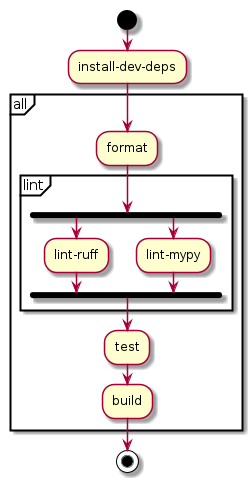</p></td> <td><p>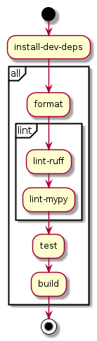</p></td> </tr> </table> --- ### Makefiles wrapped by GitHub Actions Workflow ```yaml name: Docker Build & Publish on: push: branches: [main, master] workflow_dispatch: jobs: continous-integration: name: Format, Lint, Test, and Build needs: validate-package-version runs-on: ubuntu-latest steps: - name: Set up Python uses: actions/setup-python@v5 with: python-version-file: .python-version - name: Install uv uses: astral/shell-setup@v2 - name: Checkout code uses: actions/checkout@v4 - name: Install dev dependencies run: | make -j4 all ``` -- What is a problem with a Github Actions Workflow like the one above? <!-- It seems like a Github action can use max. two cores, i.e., make -j2 https://github.com/github/codeql/discussions/11260 https://github.com/ocaml/opam/issues/3585 --> --- ### How to measure maintainability and TD? The answer is likely similar to as to how to measure software quality: It is neither easy nor straight forward. Even though difficult and not straight forward, there exists a number tools that promise to automatically assess various quality attributes of software (currently mainly source code): For example, the following tools allow to asses software code quality: <img src="http://itu.dk/people/ropf/presentations/images/sw_qual_tools.png" width=60%> --- ### How to measure maintainability and TD? * [Sonarqube](https://sonarcloud.io) - Provides a maintainability and TD measure/index - Example: https://sonarcloud.io/dashboard?id=itu-devops_itu-minitwit-terraform * [Codacy](https://codeclimate.com/) - Provides a maintainability index * [Code Climate](https://codeclimate.com/) - Provides a quality index * ~~[Better Code Hub](https://bettercodehub.com/)~~ - Focuses on maintainability, mainly based on the book: - J. Visser et al. [_"Building Maintainable Software, Java Edition"_]( https://books.google.dk/books?id=2MV4CwAAQBAJ&printsec=frontcover&dq=building+maintainable+software+java&hl=da&sa=X&ved=2ahUKEwith7qMx7DvAhUF7KQKHbOZBvYQ6AEwAHoECAIQAg#v=onepage&q=building%20maintainable%20software%20java&f=false) - J. Visser et al. [_"Building Maintainable Software, C# Edition"_](https://books.google.dk/books?hl=da&lr=&id=-QVQDAAAQBAJ&oi=fnd&pg=PR2&dq=building+maintainable+software&ots=77PM9UQrHO&sig=wDj8VeCd8dap2Rzc103jykR_K9k&redir_esc=y#v=onepage&q=building%20maintainable%20software&f=false) -- But be aware of what tools actually measure and be aware of: > The project or organization must start by making a list of nonfunctional requirements that define the "right code." We call this the quality model. > > Letouzey et al. 2012 _"Managing Technical Debt with the SQALE Method"_ --- ### Technical Debt for SonarQube - The SQALE method > **Technical Debt** (`sqale_index`) > > Effort to fix all Code Smells. The measure is stored in minutes in the database. An 8-hour day is assumed when values are shown in days. > > https://docs.sonarqube.org/latest/user-guide/metric-definitions/#header-4 > **Technical Debt Ratio** (`sqale_debt_ratio`) > > Ratio between the cost to develop the software and the cost to fix it. The Technical Debt Ratio formula is: > > `Remediation cost / Development cost` > > Which can be restated as: > > `Remediation cost / (Cost to develop 1 line of code * Number of lines of code)` > > The value of the cost to develop a line of code is 0.06 days. > > https://docs.sonarqube.org/latest/user-guide/metric-definitions/#header-4 --- ### The issue with automatic quality assessments? <p>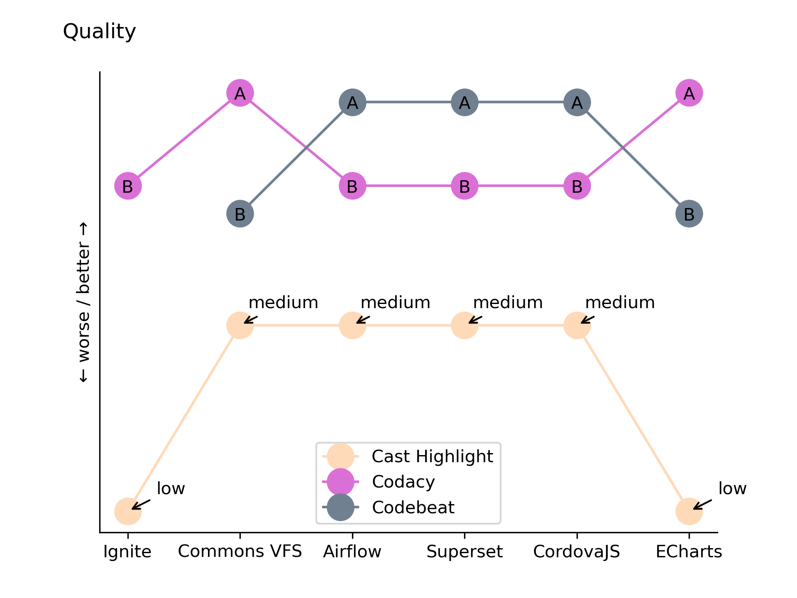</p> --- ### The issue with automatic quality assessments? <p>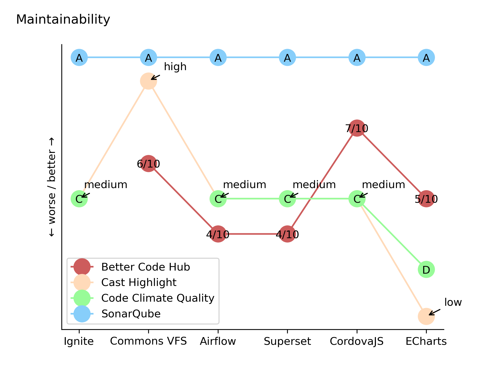</p> --- ### The issue with automatic quality assessments? <p>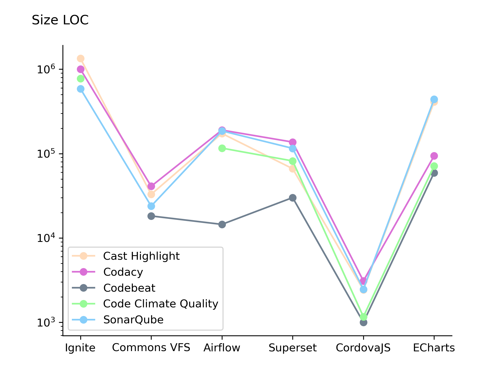</p> See e.g. [Pfeiffer and Aaen _"Tools for monitoring software quality in information systems development and maintenance: five key challenges and a design proposal"_](https://pure.itu.dk/files/103580697/ijispm-120102.pdf) --- ### The issue with automatic quality assessments? * Precisely define software quality and its assessment so that all involved stakeholders share a common understanding of quality. * This is inline with what for example the ISO/IEC 25000 series of standards state about comprehensive specification and evaluation of software quality: > "... can be achieved by defining the necessary and desired quality characteristics associated with the stakeholders’ goals and objectives for the system. This includes quality characteristics related to the software system and data as well as the impact the system has on its stakeholders. It is important that the quality characteristics are specified, measured, and evaluated whenever possible using validated or widely accepted measures and measurement methods." > > [_Systems and software engineering — Systems and software Quality Requirements and Evaluation (SQuaRE) — System and software quality models_, International Organization for Standardization, Geneva, CH, Standard, May 2015](https://www.iso.org/obp/ui/#iso:std:iso-iec:25010:ed-1:v1:en) -- * Technical debt _"is generally not detectable by static analysis [since] thoughts are stubbornly hidden from static analysis tools"_ [Fairbanks, George. "Ur-technical debt." IEEE Software 37.4 (2020): 95-98.](https://ieeexplore.ieee.org/iel7/52/9121610/09121630.pdf) * Be aware of what tools measure and if that aligns with your conception of software quality. * Do not rely on automatic assessment results at face value. * Be aware of Goodhart’s Law: _"When a measure becomes a target, it ceases to be a good measure."_ --- ## What to do now? * To prepare for your project work, practice with the [exercises](./README_EXERCISE.md) * Do the [project work](./README_TASKS.md) until the end of the week * And [prepare for the next session](../session_08/README_PREP.md)